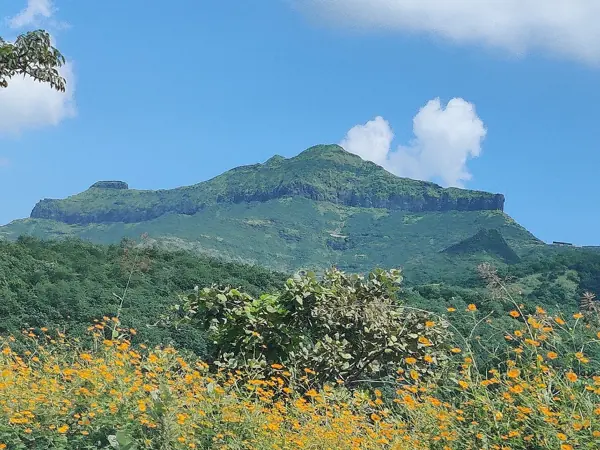

THE STORY BEHIND THE STONE
Why Rajgad
matters.
Known earlier as Murumbdev, Rajgad served as a major capital of Shivaji Maharaj before the move to Raigad. Its long ridges and separate fortified spurs reveal how the Marathas adapted a large mountain to defence and administration.
A capital shaped by the mountain ＋
Rajgad, formerly Murumbdev, was a principal seat of Chhatrapati Shivaji Maharaj before the move to Raigad. Maharashtra Tourism associates the fort with the birth of Rajaram Maharaj and the death of Saibai. These connections make the site a place of family history as well as military government.
Its three machis help explain the fort’s organisation: Padmavati contains temple and water-storage features; Sanjivani extends along a fortified ridge; Suvela includes the natural rock opening called the Nedhe. Above them, the Balekilla formed the upper citadel. Looking at these parts together reveals how separate defensive positions made use of one mountain.
Research source: Maharashtra Tourism — Rajgad · Reviewed 2026-11-15
Also known as Murumbdev
The historical source discusses Shivaji Maharaj; see the linked account for the specific episode.
Rulers & historical periods ＋
Mughal
Recorded possession intervals may omit changes of control. Exact uninterrupted durations are not assumed from a ruler’s reign.
A PLACE WITHIN THE LARGER STORY
Turning points.
 Explore Torna Fort ↗
Explore Torna Fort ↗Foundations of Swarajya
Torna and the beginnings of Swarajya
Chhatrapati Shivaji Maharaj took Torna in 1646. It was one of the earliest foundations of his independent power. The hill is also known as Prachandagad. Its commanding position offered a strong defensive base. Torna connected the emerging state to the surrounding Maval landscape. Nearby Murumbdev developed into the capital fort of Rajgad. These strongholds supported administration as well as military operations. Their gateways, water stores and defended spurs reveal practical planning. The early acquisitions preceded the coronation of 1674 by decades. Torna remains an important place for understanding how Swarajya began.
Read full story

Explore Purandar fort ↗The kingdom takes shape
Purandar: resistance and diplomacy
Mughal forces campaigned against Chhatrapati Shivaji Maharaj in 1665. Mirza Raja Jai Singh directed the campaign, with Diler Khan at Purandar. Murarbaji Deshpande is remembered for his defence of the fort. He lost his life during the fighting. Pressure on Purandar contributed to negotiations. The Treaty of Purandar required the transfer of twenty-three forts. Chhatrapati Shivaji Maharaj retained twelve forts, including Rajgad. Several surrendered strongholds were recovered in later campaigns. Purandar therefore represents diplomacy as well as armed resistance. Its history shows that Swarajya developed through changing circumstances.
Read full story
 Explore Raigad ↗
Explore Raigad ↗Kingship and administration
Raigad and the coronation of Chhatrapati Shivaji Maharaj
Raigad developed from the earlier stronghold of Rairi. Chhatrapati Shivaji Maharaj acquired it in 1656. It became a carefully developed royal and administrative centre. His coronation took place here on 6 June 1674. The ceremony formally expressed sovereign kingship. Raigad brought court, administration and defence together. The capital connected the Sahyadri uplands with the Konkan. Chhatrapati Shivaji Maharaj died at the fort in 1680. Chhatrapati Sambhaji Maharaj continued the royal association with Raigad. The site remains central to the memory of Swarajya and public service.